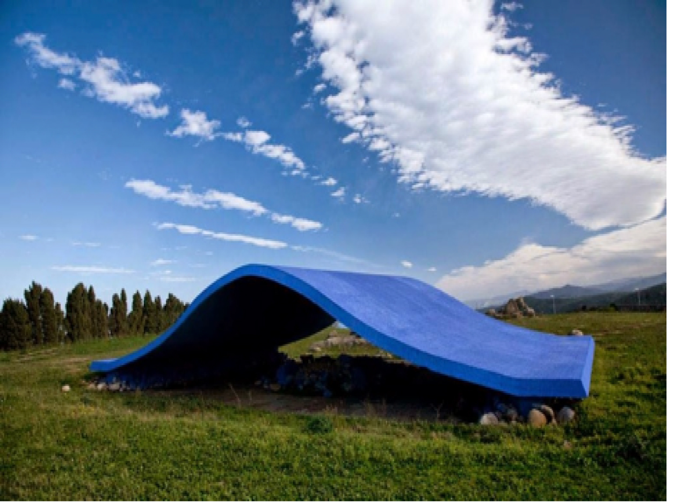

Energia Mediterranea
Scopri l'artista
L'opera "Energia Mediterranea" di Antonio Di Palma, realizzata nel 1990 per la Fiumara d'Arte, è un lenzuolo di cemento armato dipinto di blu acceso, vincitrice di un concorso bandito da Antonio Presti nel 1989. Di Palma, pittore e scultore italo-canadese, si distingue per le sue installazioni ready made e interventi sul territorio, ispirandosi a figure come Duchamp, Kandinskij, Mondrian e Albers.
L'opera, lunga 20 metri e alta 5, caratterizza il panorama di Motta D'Affermo, donando al luogo l'atmosfera della brezza marina. Simula il movimento di una vela gonfiata dal vento e ricorda le onde del mare. La superficie in cemento armato, di colore Blu Klein, offre una visione essenziale, richiamando il ritmo del mare senza impattare e integrandosi con il paesaggio circostante.
La realizzazione di Di Palma è praticabile, invitando i visitatori a viverla e attraversarla. Sotto la curva di cemento, ciottoli dipinti di blu richiamano i fondali marini. Tuttavia, il terzo artista, Carlo Lauricella, non poté completare la sua opera a causa di procedimenti giudiziari contro Presti, bloccando il progetto complessivo del parco, che avrebbe incluso opere di maestri come Edoardo Chillida, Fausto Melotti e Arnaldo Pomodoro.
L'artista asiatico Hidetoshi Nagasawa riuscì a avviare i lavori contemporaneamente agli altri cantieri, creando un luogo mistico senza categorie o ordini convenzionali. "Energia Mediterranea" è la quinta opera della Fiumara d'Arte, situata poco fuori Motta D'Affermo, e rappresenta un guizzo di energia nel mezzo della natura selvaggia.
L'installazione, riproducendo un'onda marina di 20 metri per lato e 5 di altezza, utilizza cemento armato e il caratteristico Blu Klein. Al di sotto della superficie, pietre dipinte di blu ricreano l'ambiente marino. L'opera invita i visitatori a sperimentarla come uno spazio architettonico, fungendo da tappeto volante, scivolo o punto di osservazione privilegiato per il paesaggio.
Per raggiungere "Energia Mediterranea", situata su un poggio naturale vicino a Motta D'Affermo, si consiglia di seguire le indicazioni dalla strada statale 113 in direzione Messina, prendendo la deviazione a destra dopo circa 3 chilometri fuori dal paese. Se parte del percorso completo della Fiumara d'Arte, la successiva tappa potrebbe essere l'installazione "38° Parallelo Piramide".